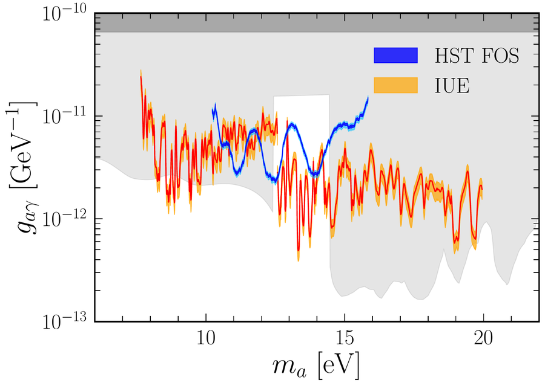

Axion decay across the electromagnetic spectrum
Axion dark matter can decay into two photons, producing a narrow spectral line. I search for this line in astronomical data from radio to X-rays.
Ultraviolet legacy data (JCAP 2026) · Axions shining in the ultraviolet (JCAP 2025) · MUSE-Faint dwarf galaxies (JCAP 2024)